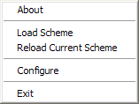
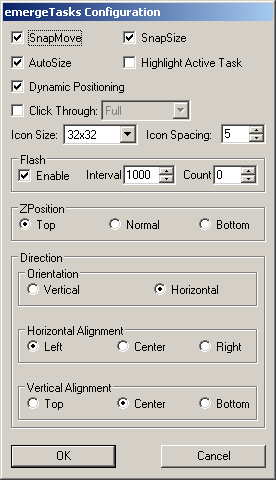

| About |
emergeTasks is the 'Tasks' applet for Emerge Desktop. It displays an icon for each running task in a resizeable / movable window.
| Configuration |
emergeTasks is configured by holding down 'Ctrl' while right clicking on the tasks window (by default appears as a grey square located on the top left corner of the screen showing an icon for each task currently running). This will popup the config menu
The About option displays the module's author and version and the current scheme's path and filename.
Load Scheme allows the user to browse and select a Scheme File.
Edit Current Scheme displays the Emerge Desktop Scheme Editor.
Reload Current Scheme allows to reload the current scheme after editing.
The Exit option closes the module. It can be restarted by running the executable file emergeTasks.exe
The Configure option displays the emergeTasks Configure dialog box
SnapMove toggles if the window should snap to the edge of other applets or the edges of the screen when moving.
SnapSize toggles if the window should snap to the edge of other applets or the edges of the screen when sizing.
Autosize toggles if the window should automatically adjust it's size to the number of icons present. If unselected then the user should set the size (see Usage below).
Dynamic Positioning toggles if the window should automatically change it's position when the desktop resolution changes.
Highlight Active Task toggles if the icon for the currently active program (application with focus) is highlighted with a coloured border. The colour of the border is the same as the selected item colour and can be modified by changing the desktop colour or the by modifying the RGB value of the color.selected parameter in the currently loaded scheme.
Click Through toggles if the user can click through the applets. If Click Through is activated, the user can choose between two modes: Full (the whole applet is "transparent" to mouse input) or Background (only the background area is "transparent" but the user can click on the icons in emergeTray, emergeTasks, emergeLauncher, the text in emergeCommand and the miniature windows in emergeVWM). Important notes: 1) Full Click Through works for any level of opacity, from opaque to fully transparent; 2) Background Click Through automatically sets the background to transparent but does not change the scheme, this is a known limitation; 3) To manipulate an applet set to Full Click Through the user must press the Shift key: Shift+Control+LeftClick to move the applet, Shift+Control+RightClick to get the Config menu and Shift+Alt to resize the applet.
Icon Size can be selected between 16x16 or 32x32 pixel icons
Icon Spacing defines the spacing in pixels between adjacent icons
Flashing of task icons when a task calls for the user attention can be Enabled or disabled as well as setting the number of flashes and interval between flashes.
ZPosition defines the relative position of the window in the Z-axis i.e. from the screen to the user and can be set to Always on Top, Always on Bottom or Normal (behaves as a regular program window)
Orientation defines if the icons are set as a column (Vertical) or as a row (Horizontal). Independently of the the Orientation, the icons can have three options for Horizontal or Vertical Alignment. Horizontal Aligment can be set to: align to the Left of the applet (i.e. new tasks are added to the right), Center (i.e. expand in both directions in relation to the horizontal center) or to the Right. Vertical Aligment can be set to: Top of the applet, vertical Center or Bottom.
If emergeTasks is not set to Autosize, when icons reach an edge they will grow (i.e. start a new row or column) according to the Horizontal and Vertical Alignments selected. Wrapping for the Center option is the same as for Top or Left, i.e. new lines are added under or the the right of a full column or row,
emergeTasks settings are stored in HKEY_CURRENT_USER\Software\Emerge Desktop\emergeTasks and consist of the following subkeys:
| Usage |
Left clicking on a task icon will restore the window (if minimized) and move the window to the foreground. Right clicking on a task icon will display it's system menu.
Left clicking on the active window task icon will minimize the task.
Double left clicking on the main window will launch the 'Windows Task Manager'.
Left clicking on the edge of the window while holding down the 'Alt' key will allow for resizing the window. Simply drag the mouse, and the window will resize itself accordingly. The new size of the window is stored in the Width and Height settings in the registry, so it's new size will be remembered on the next start of emergeTasks.
Holding down 'Ctrl' while left clicking on the edge of the window will allow it to be dragged around the desktop. When the window nears the screen edge, it will snap to it, also, it will not allow itself to be dragged off screen. Similar to the resizing, the new position is stored in the X and Y settings in the registry so that they will be remembered on next start.